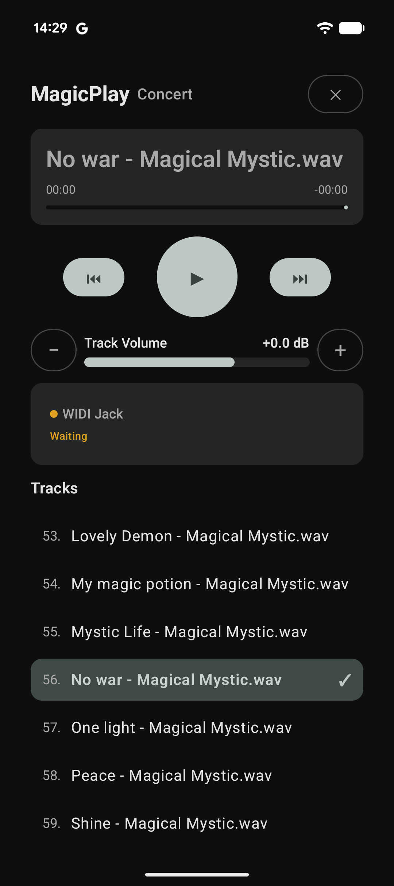

MagicPlay
MagicPlaySetlist management
Organise your songs in performance order and keep the setlist ready for the next show.
Keep your backing tracks, track levels and MIDI actions together. MagicPlay is a live-performance companion for musicians who want fewer things to manage on stage.
Android · WAV playback · MIDI control

Build your set around the tools you use on stage, with playback and MIDI actions organised track by track.
Organise your songs in performance order and keep the setlist ready for the next show.
Play audio tracks from your Android device, with an individual level for each track.
Configure Program Change and Control Change messages for compatible MIDI equipment.
Associate MIDI actions with a song so your gear can change with the setlist.
Configure fixtures, DMX channels and lighting scenes, then trigger scenes from track events.
Export and restore setlist settings, MIDI setup and Art-Net configuration. WAV audio files are not included.
A performance-focused screen keeps the current track and essential controls easy to reach.
Built around Android, with a dedicated interface for managing and running a live set.
Set up the details before the show, then keep the performance workflow simple.
Add your WAV tracks and arrange the songs in the order you want to play them.
Choose the MIDI device and define the Program Change or Control Change messages associated with a track.
Run your tracks and adjust the active track level while keeping the setlist close at hand.
Use Art-Net / DMX scenes alongside your setlist and MIDI actions. Export your configuration for backup or restore it later; WAV files remain on your device and are not included in the backup.